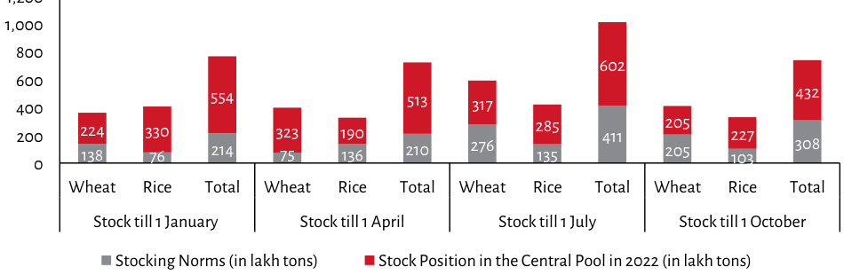

| Stock till | Wheat (Stocking Norms) | Rice (Stocking Norms) | Total Position in 2022 (in lakh tons) | | :--- | :--- | :--- | :--- | | **1 January** | 138 | 76 | 224 | | | | | 554 | | |-----------|-------|---------| | | | | - | | | Total | Wheat(Norm)| Rice(Norm)| Total Posn In 2022 | | | | Value A | Value B | Final Height/Value C | | |----------|--------:|--------:|--------------------: | | | - Red Bar|- Grey Bar-|Red Top of Stack |- Bottom Gray Segment (- Label "602") | | | ~90% height approx.|~10% height approx.|Top segment value (~317 or similar).| *Note on Y Axis:* The axis is labeled from '0' to over '1,000'. The visual data suggests the total position values are likely around double that range based on bar heights relative to grid lines and labels like "~" for intermediate segments not explicitly named.
